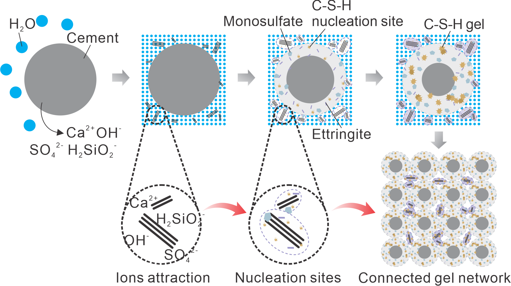

Lignin-derived Graphene Application in Cement-based Materials
Lignin-derived graphene | Cement-based composites | Hydration and strength enhancement
Overview
This project focuses on the application of lignin-derived graphene-like carbon materials as sustainable additives for cement-based materials. The study aims to explore whether biomass-derived graphene structures can improve the hydration behavior, microstructure development, and mechanical performance of cementitious composites.
The project investigates how lignin-derived graphene affects early hydration, nucleation behavior, and compressive strength development in cement systems. By comparing lignin-derived graphene with commercial graphene nanoplatelets, this work evaluates the relationship between graphene structure, dispersion behavior, surface properties, and cement matrix reinforcement. The outcomes of this project provide insights into the potential use of biomass-derived carbon nanomaterials as sustainable reinforcement additives for construction materials, supporting the development of greener and higher-performance cement-based composites.
Funding
- Mississippi State University – Office of Technology Management – (Project Title: Support for Further Development of Technology 2013.0889 – Synthesis Methods of Graphene from Lignin (SMGL))
Representative Images
